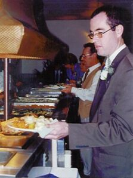
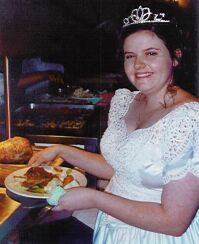
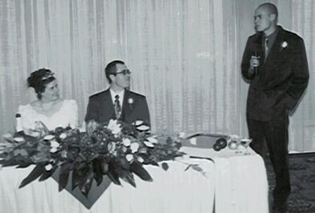
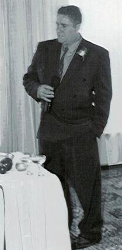
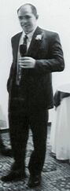
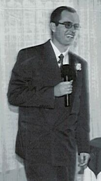
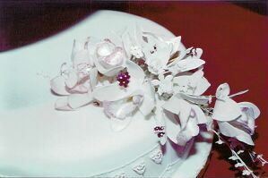
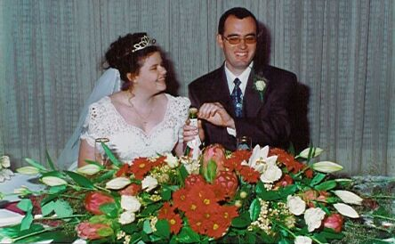
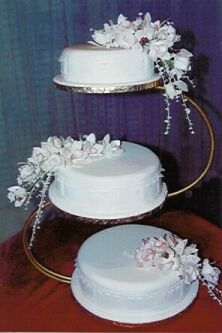

[Home] [Introduction] [Preperation] [Church] [Just Married] [Reception] [Honeymoon]
Speeches:
MC - Gerry Roelofsz
Bestman - Bobby Finn
Father of the Bride - Len Reolofsz
Groom - William Bell


I have to start off saying that the food was really great. I can't believe I looked drunk
as I had not yet finished a full glass of champange.


We really had a great MC, and my Dad had a really nice speech


William's speech was something to see, and I have yet to use the
wooden spoon Bobby gave me.
 
Auntie Merle really outdid herself with both our cake and flowers.

[Home] [Introduction] [Preperation] [Church] [Just Married] [Reception] [Honeymoon]